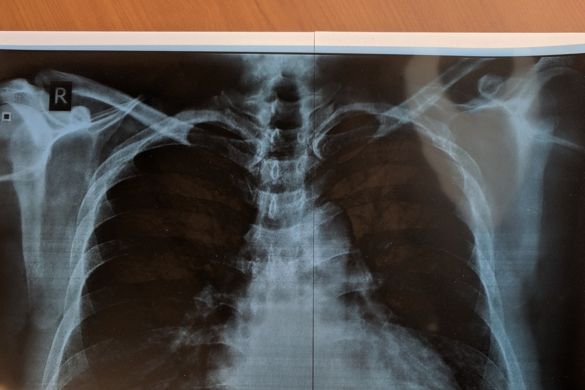
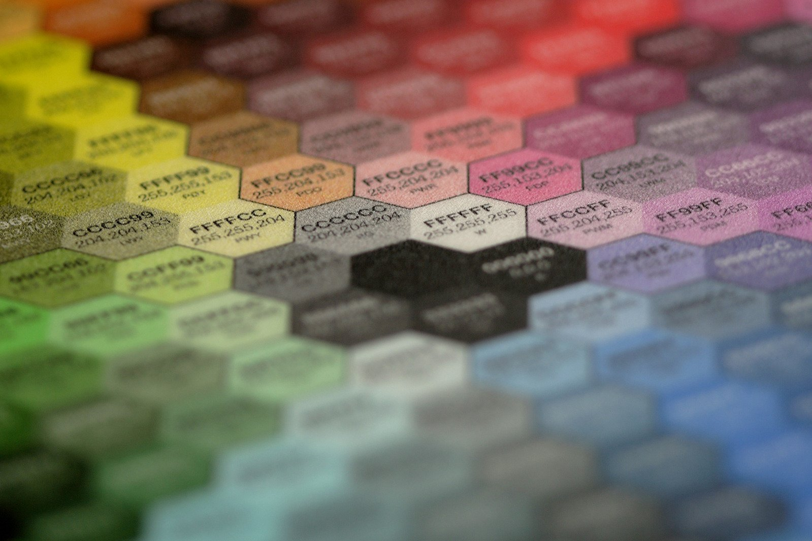

Second Opinion
Get a Second Opinion.
Upload your X-ray, and our machine learning algorithm will analyze it.
| Disease | Probability |
|---|---|
| Consolidation | |
| Infiltration | |
| Pneumothorax | |
| Effusion | |
| Nodule Mass | |
| Atelectasis | |
| Other Rare Classes |
Tip
If you don't have your X-ray in a digital format, place your X-ray on a sheet of white paper and snap a pic!

Help us out!
Our algorithm becomes stronger the more it's used. With your help we can surpass physician accuracy!
